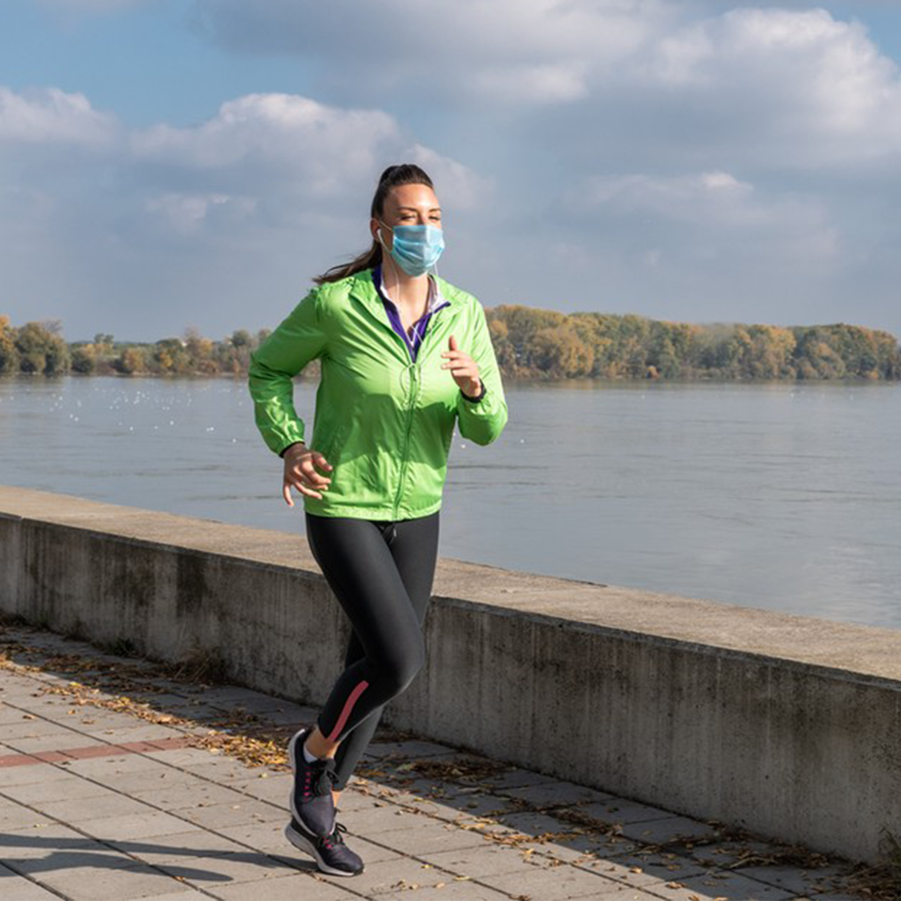

VOLTANDO PARA A REALIDADE, UM PASSO DE CADA VEZ...
No momento atual, sabemos que estamos confrontando com várias notícias intrigantes e desanimadoras desde que a Organização Mundial da Saúde (OMS) decretou a pandemia do novo coronavírus, conhecido como COVID – 19 no dia 11 de março de 2020. A partir disto, a maneira de viver de forma social e profissional mudou, principalmente os hábitos. Como por exemplo: não poder mais abraçar, dar um beijo no rosto, dar um toque na pele e se sentar ao lado na pessoa que você gosta muito. Em virtude dos avanços dos multiprofissionais nas áreas de saúde e tecnologia, as vacinas foram criadas com a velocidade acelerada para tentar frear os contágios da COVID-19. É importante enfatizá-lo que mesmo nas fases muitos difíceis, estão aparecendo as boas notícias. Essa é a nossa missão!
A doação de 80 mil medicamentos do kit intubação já partiram da Espanha rumo ao Brasil. Os anestésicos, sedativos e bloqueadores neuromusculares serão rapidamente distribuídos para todos os estados. Esse é o Ministério da Saúde trabalhando por você.
-

Exercícios regulares previnem agravamento da Covid-19...
Saiba mais -
Veja países em que o uso de máscaras não é mais obrigatório...
Saiba mais -
Idoso, hipertenso e diabético vence covid-19 e vira exemplo de força no DF...
Saiba mais